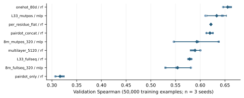
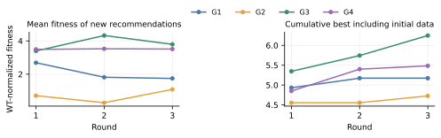
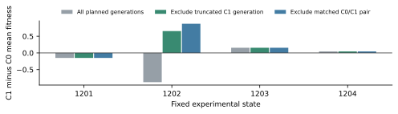

面向蛋白质定向进化的科学智能体
预测器、工具交互与反馈作用 | GB1及跨蛋白实验 | 2026-11-15
1 研究问题、数据与实验设计
本研究将蛋白序列预测器与语言模型工具调用结合，用有限的候选评分和测量查询推进虚拟定向进化。重点回答三个问题：预训练蛋白特征如何与回归器匹配；工具交互能否改善候选选择；在预测器固定时，测量反馈上下文能否带来额外收益。
数据与测量定义
主任务采用Wu等（2016）GB1实测变体库S1，共149,361条唯一变体，覆盖20⁴种四位点组合的93.35%，其中29,477条fitness为0。fitness是相对野生型归一化的结合筛选富集分数（WT=1，越大越好），未作对数变换；S2插补值不作为虚拟测量。参考域56 aa，可变位置39、40、41、54的野生型残基为VDGV。
MQYKLILNGKTLKGETTTEAVDAATAEKVFKQYANDNGVDGEWTYDDATKTFTVTE
| 实验 | 数据与预算 | 分析单位 |
|---|---|---|
| 在线虚拟进化 | 种子11/22/33；初始已知2,000，验证1,000，保留测试5,000，候选141,361；每轮评分≤40、推荐10条、共3轮 | 每种子完整轨迹；每条件n=3 |
| 预测器比较 | 9特征×3回归器×3训练量×3种子=243次拟合；训练量2,000/10,000/50,000；固定验证2,000 | 三次训练抽样与模型种子；验证集共用 |
| 反馈分离预试 | 4个新状态；反馈展示/不展示各3次生成；每次最多40候选、取10条；两选择器回放同批候选 | 先状态内平均，再四状态等权 |
工具交互与比较条件
语言模型采用gpt-6-luna，通过读取历史、知识查询、预测评分、预算查询和提交推荐五类工具组织实验。候选需通过格式、资格、去重和预算检查；固定所选变体后才读取其测量值。GB1各轮预测器仅用初始已知与本方法此前反馈拟合。
| 组别 | 预测器 | 候选设计与选择 |
|---|---|---|
| G1 | one-hot＋RF | 历史Prompt v1；程序按预测分选Top-10 |
| G2 | ESM-2 L33四突变位点均值＋Ridge（α=1） | Prompt v1；程序按预测分选Top-10 |
| G3 | 与G1相同的RF规格 | 模型逐次选工具、评分和提交 |
| G4 | 与G2相同的ESM-2 Ridge规格 | 模型逐次选工具、评分和提交 |
G1复用9轮，G2–G4新增27轮。Prompt每轮最多2次生成，Tool-Calling最多15次模型调用并设token停止阈值；评分额度耗尽时可由程序提交。四组比较描述整套提示与交互流程的表现，反馈上下文的单独贡献另由第4节的固定预测器对照估计。
2 预测器：GB1系统比较与跨蛋白扩展
ESM-2参数冻结；比较突变位点均值、拼接、全序列均值、多层拼接及成对点积等表示。离线RF为100棵树、max_features=sqrt；Ridge采用StandardScaler和α=10；MLP采用StandardScaler、256/64隐藏层、α=10⁻⁴与早停。

GB1最高验证Spearman为one-hot＋RF的0.6554，MSE=0.0385；L33突变位点均值＋MLP为0.6333，MSE=0.0086。加入六个点积特征后，逐位点拼接RF的Spearman均值变化为−0.0021。
训练规模会改变表示与回归器的相对表现：L33＋MLP由2,000条训练时的0.2869升至50,000条时的0.6333；对应8M＋MLP为0.3131和0.5932。MLP在大样本L33均值特征上表现较好，小样本条件下该特征仍由RF领先。在线G2/G4使用较小训练集的Ridge，独立于本节大样本MLP比较。
跨蛋白实测数据上的验证集选型
| 数据集 | 变体库 | 选中模型 | 选中ρ | ESM Ridge ρ | ESM MLP ρ |
|---|---|---|---|---|---|
| GFP（51,714条） | 233位点替换 | one-hot Ridge | 0.8652 | 0.6275 | 0.7765 |
| RL40A（1,380条） | 75位点单替换 | one-hot RF | 0.7849 | 0.4826 | 0.6357 |
| TEM-1（4,751条） | 单残基插入/缺失/重复 | ESM-2＋MLP | 0.7552 | 0.6568 | 0.7552 |
三个扩展数据集按seed=42进行80/20训练/验证划分；ESM使用全序列末层均值。TEM-1的ESM＋MLP达到0.7552，高于组分＋长度Ridge的0.0323以及ESM＋Ridge的0.6568。GFP与RL40A仍由one-hot回归器取得更高验证分数。该比较表明：预训练表示的收益依赖变体库结构和回归头，选型应依据具体任务的验证表现。
扩展数据来自ProteinGym；RL40A完整输入参考为128 aa，突变位于2–76。新Spearman来自保存的跨蛋白运行摘要。该表与GB1的50,000训练、三种子协议分别报告。
3 三轮进化：推荐质量与评分资源
每条轨迹先计算30条新增推荐的实测均值，再对三个种子等权汇总。下表±为种子间样本SD（ddof=1）；连续三轮属于同一条轨迹。累计最佳包含初始已知测量。
| 组别 | 新增推荐均值±SD | 累计最佳均值±SD |
|---|---|---|
| G1 RF＋Prompt v1 | 2.0840 ± 1.7949 | 5.1732 ± 0.7845 |
| G2 ESM-2 Ridge＋Prompt v1 | 0.6939 ± 0.4572 | 4.7274 ± 0.4692 |
| G3 RF＋Tool-Calling | 3.8405 ± 0.3091 | 6.2475 ± 1.2206 |
| G4 ESM-2 Ridge＋Tool-Calling | 3.5110 ± 0.4809 | 5.4850 ± 0.2451 |

同划分、同测量预算的全池模型比较
| 策略 | 推荐均值 | 新增最高值均值 | 三种子预测次数 |
|---|---|---|---|
| 均匀随机 | 0.1397 | 2.2219 | 0 |
| 全池冻结RF | 3.2492 | 6.3909 | 1,272,159 |
| 全池更新RF | 3.2022 | 6.6301 | 1,272,159 |
每策略均为三个种子、每轨迹30次测量。G3/G4分别使用326/315次候选评分，推荐均值高于两种全池RF；新增最高值均值分别为6.2475/5.4850，为更新RF的94.2%/82.7%。这一结果展示了少量评分下的平均推荐质量与发现极高分变体之间的取舍；评分次数与LLM调用开销分别计量。
四方法比较与候选来源
历史v1的随机、模型排序、基础Agent和知识辅助Agent均值为0.1741、0.3861、2.0840、1.5146。前两者从随机候选库选择，后两者可设计候选。理化性质、突变限制和组合不确定性规则提供了先验，但该次知识辅助未提高均值。
G2接受候选中325/334、最终推荐中81/90匹配当次提示的无标签示例；G1对应200/358和48/90。生成候选与提示示例存在较高重合；G1→G3、G2→G4的差异同时涉及提示呈现与交互方式。
4 反馈的独立作用：固定预测器对照
在4个独立初始状态中，以共同前缀取得的新测量构造C1反馈上下文，C0不展示该批测量。两条件各生成3次候选，每次最多40条、最终推荐10条。P0预测器保持固定，P1加入前缀测量后重拟合；同一生成批次分别由P0/P1选择，以区分上下文展示与预测器更新的作用。共24个生成条件、44次模型调用。
固定P0后，剔除受截断影响条件的反馈增量
仅排除状态1202、重复1的C1生成条件后，C1−C0的四状态等权差为+0.1761（相对C0均值提高4.36%）；同时移除对应C0重复、保持配对结构后，差为+0.2309。两种处理均有3/4个状态为正；在预测器保持不变时，所保留样本中观察到正向反馈增量。
| 分析范围 | C0/C1生成次数 | C0均值 | C1均值 | 差值C1−C0 |
|---|---|---|---|---|
| 全部预设生成（主要分析） | 12 / 12 | 4.0377 | 3.8318 | -0.2060 |
| 剔除受截断影响的C1（敏感性） | 12 / 11 | 4.0377 | 4.2138 | +0.1761 |
| 对称剔除对应C0/C1（补充） | 11 / 11 | 3.9830 | 4.2138 | +0.2309 |

生成可靠性与反馈内容分别影响结果
受影响条件首次响应因服务端输出额度达到上限而截断（finish_reason=length，128,000输出tokens），首答无可用候选；纠正阶段接受40条程序提供的无标签示例，最终推荐均值0.1690。该条件最终完成，因此保留在整体运行评价中。全部预设生成的反馈差为−0.2060，反映当前执行流程包含该事件时的表现。
正向增量来自事后明确列出的故障敏感性分析，且预测器、候选资格与选择预算保持一致；这里“独立”指与预测器更新分离的上下文作用。反馈内容与其增加的上下文长度共同构成C1输入。本结果支持在后续研究中同时保留反馈上下文并改进生成故障处理。
C1单臂剔除时，状态1202的C0保留3次、C1保留2次；对称剔除时两臂均2次。统计单位为4个状态。两种敏感性规则及全部逐次结果随报告数据文件提供，未将其作为预先指定的显著性检验。
5 Agent决策、成功与失败案例及复现
观察结果后的行动序列
G3/G4分别有5/9轮和6/9轮由模型主动提交，其余由评分额度耗尽触发程序选择。下例取G3、种子33、第2轮的真实工具日志，展示模型接收结果后继续选择工具和候选的过程。
| 步骤 | 模型获得的信息／执行的操作 | 记录中的结果 |
|---|---|---|
| 读取反馈 | get_experiment_history取得上一轮已测变体；查询cysteine at 41、alanine at 54等关键词 | 随后围绕N40/C41/A54等背景设计候选 |
| 首批评分 | predict_fitness评分INCA、FNCA、TNCA等候选 | TNCA预测3.6669；FNCA等约3.6647 |
| 追加候选 | 收到首批评分后追加ANCA、CNCA、IVCA、FVCA等 | IVCA=3.7400，FVCA=3.7400；剩余评分额度6 |
| 主动提交 | 模型调用submit_recommendations，选择IVCA、FVCA、TNCA等10条 | 理由引用预测排名和已测高分背景，未等待额度耗尽 |
这些可核查操作体现了轮内追加评估和自主停止。推荐理由作为模型陈述保存，实际效用由实测结果评价。
高实测变体与预测高估案例
| G3／seed33／第3轮 | 预测fitness | 实测fitness |
|---|---|---|
| ANCA | 4.7190 | 7.5569 |
| CNCA | 4.7190 | 0.6127 |
ANCA是G3/G4新增推荐中的最高实测变体；CNCA是预测高估最大的推荐。两者仅39位残基不同而获得相同预测，体现了该组合背景中模型区分能力不足。ANCA完整序列如下：
MQYKLILNGKTLKGETTTEAVDAATAEKVFKQYANDNGANCEWTYDDATKTFTATE
主要发现与下一步
① 表示与回归头应按任务选型：GB1以one-hot RF最优，TEM-1 indel以ESM-2 MLP取得0.7552。② 工具交互支持读取反馈、追加评分和主动提交；本次三种子的平均推荐质量高于Prompt组。③ 固定预测器的反馈对照在排除截断影响后的两种分析中均呈正增量，整体运行评价同时揭示生成可靠性的影响。后续以更多预先固定状态和故障处理规则验证该反馈作用。
复现与资料
protevo提供配置化预测器、工具调用、TUI和环境doctor；三轮语言模型实验以GB1为主。预测器比较运行evaluate_all_variants.py，跨蛋白运行run_cross_protein.py；通用循环调用run_evolution(..., retrain_each_round=True)采用每轮更新，默认False为固定预测器。报告图表、逐轮指标及反馈处理规则保存在figures-v3-data/。
GB1 G3/G4保存工具参数、工具结果和调用摘要；反馈预试另有完整公开输入与响应导出（results/supplement-20261114/public-records）。参考文献：[1] Wu et al., eLife 2016, doi:10.7554/eLife.16965；[2] Lin et al., Science 2023, doi:10.1126/science.ade2574；[3] Notin et al., ProteinGym, NeurIPS 2023；[4] Dallago et al., FLIP, NeurIPS Datasets and Benchmarks 2021。
AI使用：gpt-6-luna参与候选设计与工具调用；其他语言模型协助实现、材料整理和核查。预测分、公开理由与实测结果分别保存。数据与程序采用各原始来源声明的许可。